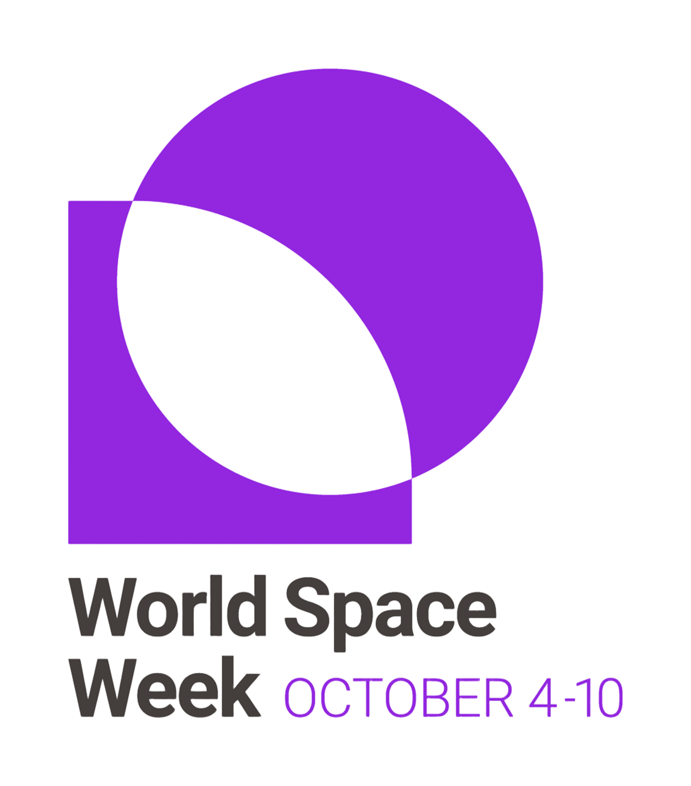

4 أكتوبر 1957
أطلق الاتحاد السوفييتي «سبوتنيك 1»، أول قمر صناعي من صنع الإنسان، فبدأ عصر الفضاء.
أسبوع الفضاء العالمي
أسبوع عالمي يحتفي بعلوم الفضاء وتقنياته، أعلنته الأمم المتحدة عام 1999 ليُقام كل عام من 4 إلى 10 أكتوبر. شعار نسخة 2026: «ثورة الصواريخ» (Rocket Revolution)، عن تحوّل الإطلاق إلى الفضاء من برامج حكومية قليلة إلى منظومة واسعة من الشركات والصواريخ القابلة لإعادة الاستخدام.

أطلق الاتحاد السوفييتي «سبوتنيك 1»، أول قمر صناعي من صنع الإنسان، فبدأ عصر الفضاء.
دخلت معاهدة الفضاء الخارجي حيّز التنفيذ، وهي الأساس القانوني لاستخدام الفضاء في الأغراض السلمية.
منذ القدم راقب الإنسان النجوم ليعرف الفصول والاتجاهات، ثم انتقل من النظر إلى الوصول.
غاليليو يوجّه التلسكوب إلى السماء ويرصد أقمار المشتري وتضاريس القمر.
«سبوتنيك 1»: أول قمر صناعي يدور حول الأرض.
يوري غاغارين أول إنسان يصل إلى الفضاء (12 أبريل).
«أبولو 11» وأول خطوات بشرية على القمر (20 يوليو).
بدء تركيب محطة الفضاء الدولية، وسكنها متواصل منذ نوفمبر 2000.
إطلاق تلسكوب جيمس ويب (25 ديسمبر) لرصد أبعد المجرّات.
زمن وصول ضوء الشمس إلى الأرض.
العمر التقديري للكون.
خط كارمان، الحدّ المتعارف عليه لبداية الفضاء.
الفراغ لا ينقل الصوت لعدم وجود هواء.
انطلقت في 1 أبريل وعادت في 10 أبريل: أول رحلة مأهولة خارج مدار الأرض منذ أكثر من 50 عامًا، دارت حول القمر وهبطت في المحيط الهادئ.
أعادت الصين أول عيّنات من الجانب البعيد للقمر إلى الأرض في يونيو 2025.
هبطت الهند قرب القطب الجنوبي للقمر في أغسطس 2023.
رواد الفضاء السعوديون
اختر أحد البطاقات لتعرف رحلته وأبرز إنجازاته.
المملكة والفضاء
ترى المملكة في الفضاء ركيزة لاقتصاد المعرفة وتنويع الاقتصاد، وتبني له حوكمة واستثمارًا وكفاءات وطنية.
الأمير سلطان بن سلمان أول عربي ومسلم في الفضاء.
بدء إطلاق أقمار مدينة الملك عبدالعزيز للعلوم والتقنية (نحو 17 قمرًا حتى اليوم).
تأسيس هيئة الفضاء السعودية (سُمّيت أولًا «الهيئة السعودية للفضاء»)، وتعيين الأمير سلطان رئيسًا لمجلس إدارتها.
إطلاق برنامج رواد الفضاء السعودي.
رحلة Ax-2: أول سعوديَّين على محطة الفضاء الدولية، وأول سعودية في الفضاء.
اتفاقية تعاون علمي مع ناسا، تشمل أول قمر سعودي لدراسة طقس الفضاء ضمن مهمة أرتميس 2.
المجلس الأعلى للفضاء برئاسة ولي العهد، وهيئة الفضاء السعودية لتنفيذ الاستراتيجية الوطنية للفضاء.
صندوق الاستثمارات العامة عبر «مجموعة نيو سبيس» لبناء قدرات سيادية في تصنيع الأقمار وتحليل بياناتها.
برامج التعليم والشباب وبرنامج الرواد لبناء رأس مال بشري وطني.
تعاون مع ناسا وشركات عالمية، وجذب الاستثمار الأجنبي في تقنيات الفضاء.
عالميًا، بلغ اقتصاد الفضاء نحو 464 مليار دولار عام 2022، ويُتوقع أن يصل إلى 738 مليارًا بحلول 2030 (Space Foundation).
worldspaceweek.org · unoosa.org (مكتب الأمم المتحدة لشؤون الفضاء الخارجي) · nasa.gov · ssa.gov.sa (هيئة الفضاء السعودية) · وكالة الأنباء السعودية (spa.gov.sa) · Arab News · Britannica · The Planetary Society